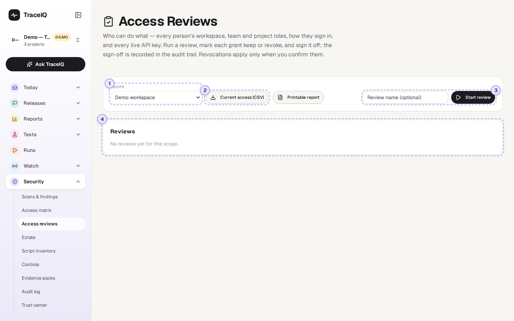
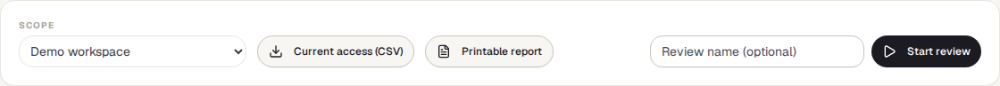
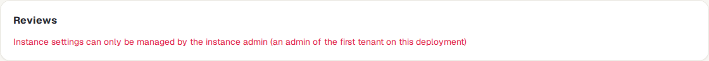
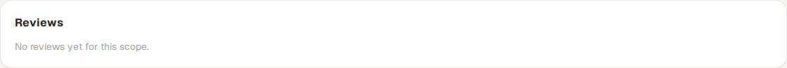

Access reviews
Every so often, someone responsible looks at the list of people and API keys that can get into TraceIQ, decides for each one whether it should keep its access, and signs the review off. This page lists everyone's access, runs that review, keeps a record of every decision, and removes access only when you confirm it.
What it is for
People change jobs, leave, or keep access they needed for one project long ago. An access review is the regular check that catches this: a named person goes through who has access and confirms or removes each one. Security standards and auditors (SOC 2, ISO 27001, PCI DSS) usually ask for one every quarter, with proof that it happened. This page answers "Who can get into our TraceIQ, should they still, and can we prove we checked?"
An API key is a password for a program rather than a person, for example the key a build server uses to start test runs. Keys are reviewed too.
Workspace admins
See everyone's roles and how they sign in, and remove access that is no longer needed.
Security and compliance
Run the quarterly review and keep the signed-off record for audits.
Auditors
Get a spreadsheet or a printable page of who had access, who decided what, and when.
Where to find it: in the sidebar, open Security → Access reviews. The page's own heading says Access Reviews.
A tour of the screen
The page opens on the list of reviews. The numbers on the screenshot match the sections below.

Scope

What to review. Choose one of your workspaces, or Whole instance (instance admins) for every account on the TraceIQ server. When the page opens it picks your first workspace, which may not be the one you want, so check this first.
Reviewing a workspace needs the workspace admin role there. The whole-server review needs an instance admin (someone who runs the server); everyone else sees a refusal in the list instead:

Current access
Two buttons give today's list for the chosen scope, without starting a review:
- Current access (CSV) downloads a spreadsheet file. A person with access to two workspaces is two rows, so you can filter by workspace.
- Printable report opens a page you can print or save as PDF.
For each person: their role in each workspace, their teams, their role in each project and how they got it (directly or through a team), whether they are an instance admin, how they sign in (password, or single sign-on such as SAML, OIDC or LDAP), whether two-step login (MFA) is on, and when they last signed in. For each API key that hasn't been revoked: what it can reach and with which role, who created it and when, when it was last used and when it expires.
Start review
Type a name if you like; without one, TraceIQ names it after the quarter, for example 2026 Q4 workspace access review. Then press Start review. TraceIQ takes a snapshot of the current access as one item per person and per API key, and opens the review. The snapshot doesn't change afterwards, so the review shows exactly what was checked, even if access changes while it is going on.
Reviews

Past and current reviews for the chosen scope, each with its name, when it was started and by whom, the number of items, how many are undecided and how many are marked revoke, and a label: in review or signed off. Click one to open it.
Inside a review
An open review is a table with one row per item:
| Column | What it shows |
|---|---|
| Who / what | The person's email address, or the key's name and the first characters of the key, labelled person or API key. |
| Access at review start | The snapshot: roles, teams and projects, and the sign-in facts listed under ②. |
| Note | Why you decided as you did. Required for Revoke. Under it: who decided, and when. |
| Decision | Keep or Revoke. Each click is saved straight away and can be changed until the review is signed off. |
Above the table: keep / revoke / undecided counts, the CSV and Printable report buttons for this review, and the sign-off.
Watch it in use
How to…
…run the quarterly review
- Choose the workspace under Scope, type a name and press Start review.
- Go down the table. For each item, press Keep, or write a note (for example "left the company in August") and press Revoke.
- When nothing is undecided, add a sign-off note if you like and press Sign off review. Decisions can't be changed after this.
- Download the CSV or Printable report of the review for your records.
…remove the access you marked Revoke
- Open the signed-off review. Nothing has been removed yet.
- Press Preview revocations. TraceIQ lists exactly what it will revoke, with your notes.
- Press Confirm and revoke (or Cancel). Each item then shows what was done under its note.
…give an auditor a list of who has access today
- Choose the scope.
- Press Current access (CSV) for a spreadsheet, or Printable report and save it as PDF.
Good to know
- What "revoke" does. In a workspace review, a person is removed from the workspace, its teams and its projects (their account stays), and an API key is revoked. In a whole-server review, the person's account is deactivated and their logins are ended at once. Accounts are never deleted, so their history stays.
- You can't revoke yourself. If the person confirming is one of the Revoke items, that item is skipped.
- Sign-off needs every item decided. The button stays greyed out until nothing is undecided ("Decide every item first").
- Everything is recorded. Starting a review, every decision, the sign-off (with the reviewer and time) and every revocation go into the Audit log.
- People only. Reviews can't be done with an API key: a program calling TraceIQ is refused, so a real person always signs.
- It feeds your controls. On the Controls page, a control can check that an access review was signed off within a number of days.
- Downloads are safe to open. Cells that would start a formula in a spreadsheet are neutralised in the CSV.
Related pages
Estate
The next page in this guide: your public domains and certificates, scored from the outside.
Workspace
Where members, teams and roles are changed day to day.
Controls
Compliance checks, including "an access review was signed off recently".
Audit log
The record of every review decision, sign-off and revocation.